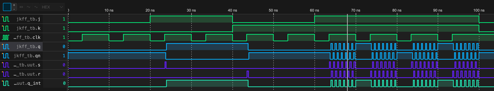

JK Flip-flop not Behavioral (VHDL version)
1 Intro
Most online VHDL descriptions of JK flip-flops (FF) are based on “processes” or circuit functionality (behavioral). Is it possible to simulate them only by constructing the circuit structure of the JK flip-flop?
2 JK FF Review
The circuit structure is JK FF is very familiar to everybody, which is:
The corresponding truth table is shown below:
| C | J | K | Q | Q̅ |
|---|---|---|---|---|
| ↑ | 0 | 0 | latch | latch |
| ↑ | 0 | 1 | 0 | 1 |
| ↑ | 1 | 0 | 1 | 0 |
| ↑ | 1 | 1 | toggle | toggle |
| x | 0 | 0 | latch | latch |
| x | 0 | 1 | latch | latch |
| x | 1 | 0 | latch | latch |
| x | 1 | 1 | latch | latch |
where “latch” represent the Q output remembers whatever the last stored value was. “Toggle” means to flip Q, i.e. 0 -> 1, 1 -> 0. “↑” means the clock signal in a leading edge.
3 Problem
3.1 First try
Write the following content in JKFF.vhdl:
library IEEE;
use IEEE.STD_LOGIC_1164.ALL;
entity JKFF_nodelay is
Port (
J : in STD_LOGIC; -- J input
K : in STD_LOGIC; -- K input
clk : in STD_LOGIC; -- Clock input
Q : out STD_LOGIC; -- Output Q
QN : out STD_LOGIC -- Output QN (complement of Q)
);
end JKFF_nodelay;
architecture Structural of JKFF_nodelay is
-- Internal signals for latch and clock gating
signal S, R : STD_LOGIC; -- Set and Reset inputs for the latch
signal Q_int, QN_int : STD_LOGIC := '0'; -- Internal Q and QN for feedback
begin
S <= (J and clk) and QN_int;
R <= (K and clk) and Q_int;
-- NOR gate-based latch
Q_int <= not (R or QN_int);
QN_int <= not (S or Q_int);
-- Outputs
Q <= Q_int; -- Main output
QN <= QN_int; -- Complementary output
end Structural;Then write a testbench file to test the behavior of this circuit, you will find it will not work well.
3.2 Reason
The reason (probably, only personal view) is that JK FF have two layers of feedback (instead of SR FF, which just have one), since we loop our output Q not only to the NOR gates, but also AND to our initial inputs J and K. This confuse the compiler because the resultant signal changes so fast and maybe not have a stable consequence, so the compiler do not know how to respond to this kind of feedback.
So we introduce some delay in the gates to simulate the reality closer.
4 Solution
4.1 Adding delay in the gates
We write the following content in another file JKFF.vhdl:
library IEEE;
use IEEE.STD_LOGIC_1164.ALL;
entity JKFF is
Port (
J : in STD_LOGIC; -- J input
K : in STD_LOGIC; -- K input
clk : in STD_LOGIC; -- Clock input
Q : out STD_LOGIC; -- Output Q
QN : out STD_LOGIC -- Output QN (complement of Q)
);
end JKFF;
architecture Structural of JKFF is
-- Internal signals for latch and clock gating
signal S, R : STD_LOGIC; -- Set and Reset inputs for the latch
signal Q_int, QN_int : STD_LOGIC := '0'; -- Internal Q and QN for feedback
begin
S <= (J and clk) and QN_int after 0.1 ns;
R <= (K and clk) and Q_int after 0.1 ns;
-- NOR gate-based latch
Q_int <= not (R or QN_int) after 0.2 ns;
QN_int <= not (S or Q_int) after 0.2 ns;
-- Outputs
Q <= Q_int; -- Main output
QN <= QN_int; -- Complementary output
end Structural;And run the following JKFF_tb.vhdl:
library IEEE;
use IEEE.STD_LOGIC_1164.ALL;
entity JKFF_tb is
-- No ports for testbench
end JKFF_tb;
architecture Behavioral of JKFF_tb is
-- Component declaration
component JKFF
Port (
J : in STD_LOGIC;
K : in STD_LOGIC;
clk : in STD_LOGIC;
Q : out STD_LOGIC;
QN : out STD_LOGIC
);
end component;
-- Signals to connect to the JKFF
signal J, K, clk : STD_LOGIC := '0';
signal Q, QN : STD_LOGIC;
begin
-- Instantiate the JK Flip-Flop
uut: JKFF
Port Map (
J => J,
K => K,
clk => clk,
Q => Q,
QN => QN
);
-- Clock generation process
clk_gen: process
begin
for i in 0 to 9 loop -- Generate 10 clock cycles
clk <= '0';
wait for 9 ns; -- Low for 5 ns
clk <= '1';
wait for 1 ns; -- High for 5 ns
end loop;
wait; -- End simulation after clock finishes
end process;
-- Stimulus process to apply test cases
stimulus: process
begin
-- Test Case 1: Hold state (J = 0, K = 0)
J <= '0'; K <= '0';
wait for 20 ns;
-- Test Case 2: Set state (J = 1, K = 0)
J <= '1'; K <= '0';
wait for 20 ns;
-- Test Case 3: Reset state (J = 0, K = 1)
J <= '0'; K <= '1';
wait for 20 ns;
-- Test Case 4: Toggle state (J = 1, K = 1)
J <= '1'; K <= '1';
wait for 40 ns;
-- Return to Hold state
J <= '0'; K <= '0';
wait for 20 ns;
wait; -- End simulation
end process;
end Behavioral;4.2 Results
We will get the following waveform:
There are several strange things happen here:
4.2.1 What happen before around 30 ns?
The Q and QN oscillates at the same pace. Why? It’s because both J and K are zero. For a JK FF, this means to remember the last value. But the last value of Q and QN are both zero (we initialize them in the JKFF.vhdl file):
signal Q_int, QN_int : STD_LOGIC := '0'; -- Internal Q and QN for feedbackThis is invalid and unstable! So they oscillates with a period of 0.2 ns, which is exactly the delay time of the NOR gates.
OK, if instead we initialize the Q and QN a valid value, say Q_int=0 and QN_int=1 like this (in JKFF.vhdl file):
signal Q_int : STD_LOGIC := '0'; -- Internal Q for feedback
signal QN_int : STD_LOGIC := '1'; -- Internal QN for feedbackSince they are valid, hence stable, Q and QN will not oscillates as expected:
4.2.2 Why not toggle successfully?
At around \(t = 70\) ns, both J and K are 1. This means at the leading edge of the clock signal clk, Q and QN should both flipped! But according to the waveform, they tried but failed, with a tiny pulse around that time.
I tried several clk pulse width and analysed the JK circuit in “slow-motion” carefully (Try this! Very surprising!). Finally I figured it out:
It’s because JK FF don’t want the clk signal be high for too long. This is because if the clk line hold high for a sufficient long period, the signal at Q and QN will “backpropagate” (Haha just borrow the term) to the inputs, continue to control whether or not the J and K signal should come in. If we increase the so-called “duty-ratio” of the clk signal, we will see these:

Some value of duty ratio (e.g. 0.65) happen to toggle the Q successfully, while others do not.
You can think of what value could the duty ratio be? (Given the clock cycle and the propagation delay of all gates) This is a very intereting yet tedious problem to consider. But as long as you understand why Q oscillates, you understand this.
Therefore people say that there are no “JK latches”.
5 Conclusion
The VHDL realization of a JK FF can be achieved by introducing propagation delay to the gates.